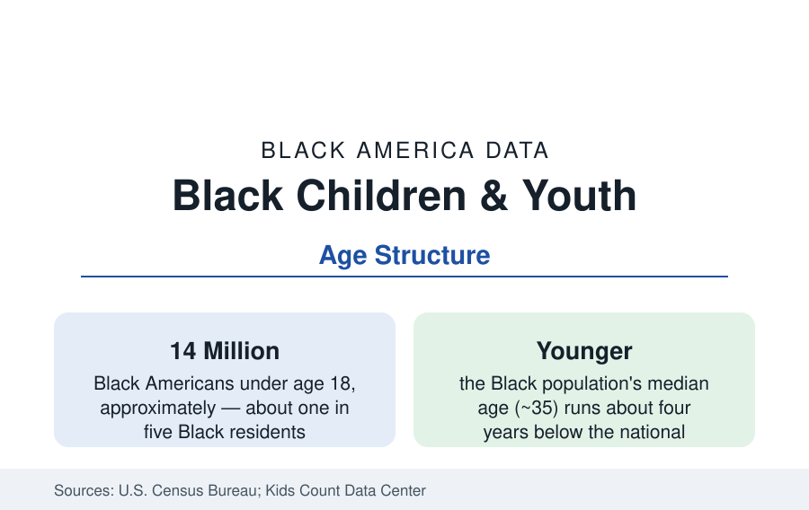

Black Census
Black Children and Youth: The Youngest Fifth of Black America
About 14 million Black Americans are under 18 — a younger population than the nation's, with its own geography, composition, and data. The census profile.

About 14 million Black Americans are children — under 18 — roughly one in five of the Black population, a larger youth share than the nation's (about 22 percent of all Americans are children, and the Black share runs higher, near 27 percent counting children alone or in combination). The child population is the leading edge of every dataset in this reference: today's school enrollments are its portrait, tomorrow's workforces and households its consequence. This article profiles Black America's children in the census data.
The Geography of Black Childhood
Black children live where Black America lives, with the family's tilt toward the South stronger still: the Southern states hold a larger share of Black children than of Black adults (the region's younger family structure and the return migration's family composition together), and the great metros of the city profiles are, in their school-age data, children's cities — Atlanta's, Houston's, and Dallas's suburbs above all, where Black children form a quarter to a third of enrollment in the big suburban districts. The Kids Count compilations add the state-level welfare frame: Black child poverty runs highest in the Deep South's rural counties and the industrial Midwest's cities, lowest in the suburban South and the capital regions — the households article's income geography at child scale.
Composition: Two-Parent, Extended, and Kinship Homes
The living-arrangement data (the household profile's detail) place Black children across the full range of family forms: roughly four in ten live with two parents (married or cohabiting, in the survey's combined measure), roughly four in ten with a single mother, most of the rest with a single father, grandparents, or other kin — the extended-kin arrangements in which Black childhood has always disproportionately been raised. The multigenerational data (the companion profile) count Black children in grandparent-headed and three-generation homes at rates well above the national pattern. The research literature's discipline applies: arrangement correlates with resources (income, time, housing stability) more than it determines outcomes, and the child-wellbeing indices (Kids Count's composite of health, education, economic, and family measures) rank states for Black children in an order that follows the income and policy data more than the family-form data.
The Immigrant Generation
Roughly one in five Black children is an immigrant or the child of immigrants in the survey estimates — the second generation of the foreign-born profile — concentrated in the gateway metros (New York, Miami, Boston, Houston, the capital region) and the resettlement corridors. Their data describe the steepest mobility curve in the children's file: parental education bimodal (the African professional stream and the refugee stream in the same classrooms), English-learner shares significant in the gateway districts, and attainment outcomes in the second generation that the education literature tracks converging toward — and in several gateway studies past — the native-born Black averages, a divergence the aggregate child data conceal.
Health and the Early Years
The public health section's child data assemble here: infant mortality at roughly double the national rate (the maternal-infant profile), asthma the leading chronic condition (the asthma profile), lead exposure concentrated in the older housing stock of the industrial cities, and the early-childhood education data (preschool enrollment, where Black children enroll at rates near or above national figures in the public programs and below in private ones). The child population's health frame is the section's longest lever: the disparities measured at age five compound through every subsequent dataset in this reference.
Reading the Children's Data
The foster-care data belong to the children's file as its hardest page: Black children form roughly a fifth to a quarter of the foster-care population against their smaller share of childhood, enter care at higher rates, and — in the brighter finding of the recent data — are placed with kin at rising rates under the kinship-preference framework of the companion profile. The adoption data mirror the entry data, and the aging-out cohort (young people leaving care without permanent families, disproportionately Black) feeds the young-adult homelessness and employment data at measurable rates.
Fourteen million children, a median outcome in front of them that every other article in this reference describes for the adults they will become. The children's data are best read as the nation's early-warning system: where Black children's indicators move — in the suburban South's school districts, the gateway metros' second generation, the Delta's county tables — the adult data of the 2040s are being written now.
More in Black Census
The Black Population of the United States: Size, Definitions, and Distribution
The Black population of the United States totals 52.8 million — 15.4 percent of the nation. How the Census Bureau defines and counts the population, and where it lives.
Black Median Household Income in the United States
Black median household income stands at $56,490 in the Census Bureau's annual income report — how the figure is measured, how it compares, and what drives it.
The Black Poverty Rate: Levels, Children, and the Long Trend
The official Black poverty rate is 17.1 percent — against 11.1 percent nationally and 7.7 percent for non-Hispanic White Americans. How poverty is measured and what the data show.
Source: U.S. Census Bureau, decennial census and American Community Survey; Annie E. Casey Foundation, Kids Count Data Center.